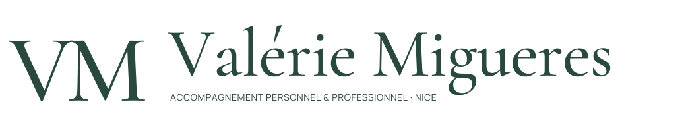

Affirmée.
De grands titres, des contrastes nets, une signature immédiatement identifiable.
Une identité calme.
Une présence qui marque.
Une identité qui accueille sans s’effacer. La douceur des matières méditerranéennes rencontre la force d’une composition éditoriale.
De grands titres, des contrastes nets, une signature immédiatement identifiable.
Des mots simples, une présence attentive et une chaleur mesurée.
Une hiérarchie claire, des informations fiables et un chemin de contact évident.


Signature principale
Nom complet et ligne d’activité. La marque repose sur la personne, pas sur un nom de méthode.
Deux contrastes
Vert sur ivoire ou ivoire sur vert. Les SVG sont vectorisés et utilisables sans installer les polices.
Une ligne stable
« Accompagnement personnel & professionnel · Nice ». Le titre professionnel complet reste dans les contenus.
VM devient un repère discret : favicon, avatar, dos de carte ou signature de document.

Privilégier le nom complet au premier contact. Le monogramme accompagne l’identité ; il ne la remplace pas systématiquement.
Taille minimale
Signature complète : 280 px ou 55 mm. Monogramme : 32 px ou 8 mm.
À petite taille
Préférer VM seul. En dessous de 32 px, utiliser une variante simplifiée à traits renforcés après test.
À éviter
Déformation, ombre ajoutée au logo, rotation, contours décoratifs ou bronze sur fond clair.
La palette existante est conservée. L’impact vient de son rythme : beaucoup d’ivoire, des aplats de vert assumés, quelques respirations minérales.
Répartition indicative : ivoire 50 %, vert 25 %, sauge 12 %, sable 8 %, encre 4 %, bronze 1 %.
#F7F4EEFond principal · lumière#29483ESignature · action · impact#DEE5DBPause · fonds secondaires#E8DDCBMatière · surfaces chaudes#26352FTexte · lecture#947448Détails · filets · petits signesAa Bb Cc Dd Ee Ff Gg
0123456789 &
Titres, signature, citations courtes.
L’italique souligne une intention, sans envahir le texte.
À Nice, Valérie Migueres vous accompagne dans les périodes de stress, de doute et de transition, avec une approche personnalisée de votre vie personnelle et professionnelle.
Deux familles maximum. Polices hébergées localement, fournies avec leurs licences OFL.
01 — Asymétrie
Texte à gauche, matière ou signe à droite. Un point focal par écran.
02 — Échelle
Grands titres, petites mentions, marges généreuses. Le contraste crée la présence.
03 — Rythme
Filets fins et numérotation discrète. Alterner ivoire, sauge et vert profond.
Un espace pour clarifier ce qui compte et explorer vos prochaines étapes.
Un accompagnement à votre rythme.
Application proposée de la charte. Sur mobile : une colonne, marges de 20 px, zones tactiles de 44 px minimum. Animations discrètes de 250–400 ms, désactivées si la réduction des mouvements est demandée.
Parler des besoins avant de parler des outils. Inviter à faire le point, sans pression ni promesse de résultat.
« Prenons le temps de comprendre ce qui vous amène. »
ENGLISH“Space to reflect on what matters, at your own pace.”
Des phrases courtes, un vocabulaire concret et une adresse respectueuse.
Aucun diplôme, avis, partenaire ou résultat inventé. Les langues de consultation restent à confirmer.
Portrait réel, lumière naturelle, lin, bois et pierre. Jamais un intérieur fictif présenté comme le cabinet.
Avant les photos : monogramme, courbes et compositions abstraites. Aucun cadre vide ou faux portrait.
| Combinaison | Ratio | Usage |
|---|---|---|
| Encre sur ivoire | 11,72:1 | Texte courant |
| Ivoire sur vert | 9,15:1 | Boutons, fonds sombres |
| Vert sur sauge | 7,81:1 | Texte et titres |
| Encre sur sable | 9,58:1 | Texte courant |
| Bronze sur ivoire | 3,94:1 | Détails décoratifs |
Ratios calculés selon la luminance relative WCAG. Le bronze n’atteint pas 4,5:1 sur ivoire : ne pas l’utiliser pour les petits textes. Objectif : AA pour le texte courant.
Écran
HEX en sRGB. Focus visibles, vrais libellés, contrastes stables. Les effets ne portent jamais l’information essentielle.
Impression
Ce PDF est un document de référence. Pour une fabrication, préparer un fichier avec fonds perdus et le profil ICC fourni par l’imprimeur ; valider un BAT avant production.
Contenu
Les tarifs et modalités sont vérifiés avant diffusion. Le formulaire ne confirme un succès qu’après un envoi réellement accepté.
Identité
Deux polices, six couleurs, un monogramme. Les espaces et la hiérarchie donnent l’impact, sans accumulation d’effets.
Une proposition graphique plus affirmée, fidèle à l’ivoire et au vert de votre site.
PDF 12 pages et source HTML/CSS modifiable.
6 SVG vectorisés : logo complet et monogramme, en vert, ivoire et encre.
Polices locales, licences et fichier de paramètres couleurs, typographie et espaces.
Valider cette direction puis l’appliquer au site et aux supports choisis. Cette livraison ne modifie pas le site public.